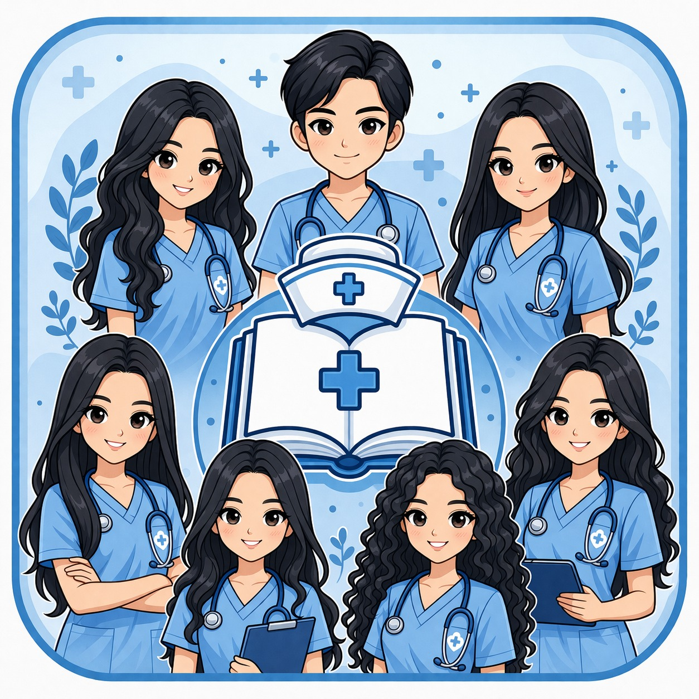

01
🫀 CONTROL DE LA PRESIÓN ARTERIAL
Mantener la presión arterial controlada es fundamental para prevenir enfermedades del corazón, derrames cerebrales y problemas renales.
“Educar en salud es salvar vidas”
Contenido confiable, fácil y accesible para la comunidad y estudiantes de enfermería. Aprende, previene y cuida tu salud con nuestra plataforma educativa interactiva.

¿Qué es? Una plataforma educativa digital.
¿Para quién? Comunidad general y estudiantes de enfermería.
¿Qué ofrece? Guías prácticas, prevención y contenido confiable para el cuidado
de la salud.
Compartir conocimientos útiles de salud para apoyar el aprendizaje clínico, el autocuidado directo y la prevención responsable de enfermedades.
Educación dirigida a la comunidad general, estudiantes y personal técnico formativo mediante un contenido interactivo 100% digital.
En cada tema encontrarás una explicación breve. Al hacer clic, se abrirá la información ampliada con recomendaciones y referencia.
Mantener la presión arterial controlada es fundamental para prevenir enfermedades del corazón, derrames cerebrales y problemas renales.
Una alimentación saludable ayuda a mantener el cuerpo fuerte y prevenir enfermedades como diabetes, obesidad y problemas cardíacos.
El uso adecuado de medicamentos permite tratar enfermedades de forma segura y eficaz. Un mal uso puede provocar complicaciones.
Los primeros auxilios son acciones inmediatas que se realizan en una emergencia para ayudar a una persona antes de que llegue atención médica.
El cuidado del adulto mayor busca mantener su bienestar físico, emocional y social, mejorando su calidad de vida.
La prevención es clave para evitar enfermedades y mantener una vida saludable.
Coordinación general
Contenido
Redes sociales / Marketing
Redes sociales / Marketing
Contenido
Diseño
Diseño
Tu aporte voluntario nos permite mantener la plataforma gratuita y actualizada.
Escanea para donarNuestro proyecto no solo informa, sino que busca prevenir enfermedades a través del aprendizaje.